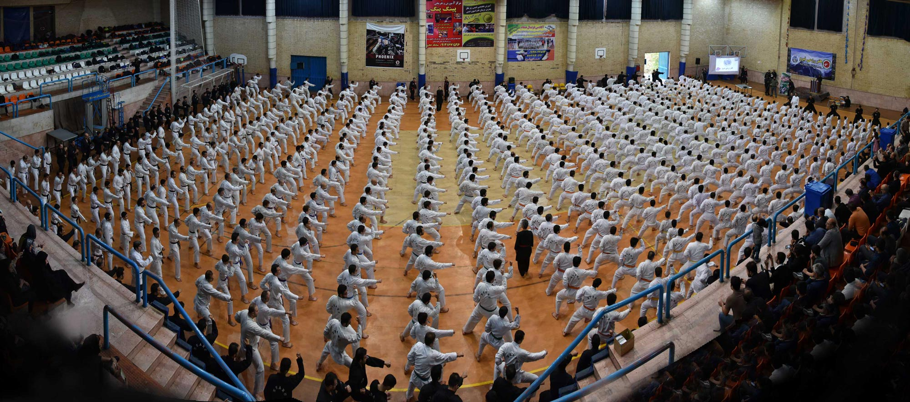

<div class="event-info">
 <div>
 <p>هنر رزمی نیرو با استفاده از فنون کاربردی دفاع شخصی و تکنیکهای تنفسی، قدرت، اعتماد بنفس و آرامش را برای شما به ارمغان می آورد.</p>
 
 <p>"هنر رزمی نیرو"، یکی از سبک های شناخته شده در فدراسیون ورزش های رزمی جمهوری اسلامی ایران می باشد. اساس این سبک بر پایه آموزش تکنیک های دفاع شخصی به صورت کاربردی به همراه تکنیک های تمرکزی و تنفسی می باشد. بنیانگذار سبک نیرو، استاد امیر لطفی آزاد می باشد که این رشته را در سال 1990 در فدراسیون هنرهای رزمی انگلستان ثبت و فعالیت خود را در سال 1991 پس از بازگشت به ایران آغاز نمود. ایشان با دارا بودن سالیان متمادی تجربه و دانش در هنرهای مختلف رزمی و تمرین و تحقیق در زمینه فنون تنفسی و رازهای نهفته در آن و نیز کسب مدرک استادی ارشد از کشور انگلستان و پشت سر گذاشتن موفقیت آمیز دو سفر هیمالیا برای پیشرفت در نیروهای درونی، رشته نیرو را با هدف آموزش فنون دفاع شخصی و شکستن اجسام سخت، استفاده صحیح از نفس و کنترل فکر و جسم، صلح و آرامش بنیان گذارد.</p>
 </div>
</div>